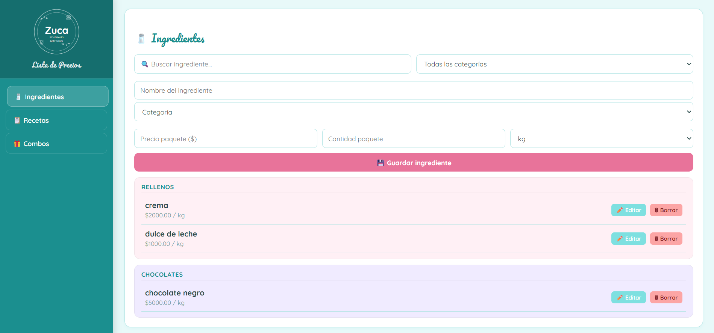
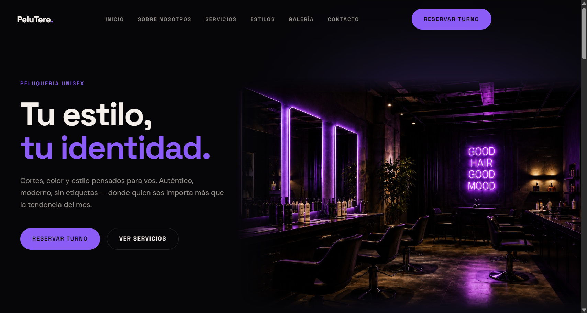
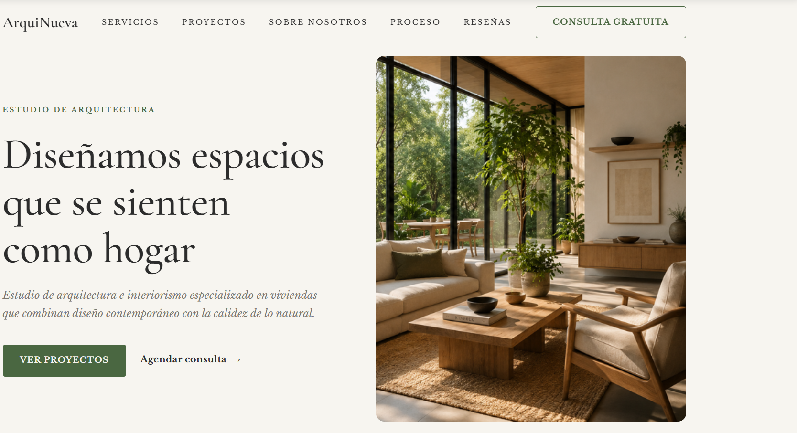
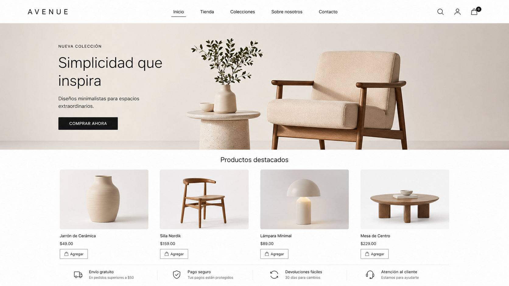

01

Zuca Pastelería
Aplicación web
Hacé clic para ingresar
Tu esencia, llevada a la web
Creo sitios a medida para emprendimientos, marcas personales y negocios que quieren una web a la altura de su identidad. Nada de plantillas recicladas.
Me presento, mi nombre es Mateo Benítez y me dedico al desarrollo de páginas web. Mi primer código lo escribí hace 4 años en la secundaria técnica de Muñiz, donde hoy estoy terminando mi formación en informática.
Entre proyectos escolares y trabajos personales —como la web que armé para el emprendimiento de pastelería de mi mamá— fui construyendo una forma de trabajar que se obsesiona con los detalles y la personalización. Cada proyecto arranca en blanco y se diseña pensado en la marca, el rubro y las personas a las que apunta. Trabajo con emprendedores, marcas personales y pymes que quieren una presencia online que los represente de verdad, sin pagar lo que cobra una agencia.




Aplicación instalable para un emprendimiento de pastelería artesanal. Gestiona ingredientes, recetas y combos, y calcula automáticamente el precio de venta de cada producto. Reemplazó un proceso manual que tomaba horas por semana.
Página de una sola pantalla ideal para promocionar un producto, servicio o captar contactos.
Saber másCada experiencia digital es única. Los valores publicados representan una base inicial en pesos argentinos (ARS) y pueden variar según la complejidad, funcionalidades e integraciones del proyecto. Servicios externos como dominio, hosting o bases de datos se presupuestan por separado según las necesidades de cada marca.
Por WhatsApp o llamada. Me contás qué problema querés resolver, cómo imaginás el sitio y qué negocios de referencia te gustan.
Antes de cualquier código, te paso una propuesta visual con colores, tipografías y estilo, para que veas hacia dónde vamos. Sin costo.
Con la dirección aprobada, te armo una maqueta concreta de tu sitio y te envío la cotización formal. Arrancamos con un 40% de adelanto.
Uso los colores, la tipografía y la identidad de tu negocio. Código limpio, rápido y adaptado a celulares. Incluye 2 rondas de cambios sin costo.
Publico el sitio online, te muestro cómo editarlo y te dejo una guía de uso. Garantía de 2 meses por bugs, sin cargo.
Estoy muy feliz usando mi aplicación, me simplifica mucho a la hora de pasar presupuestos y agiliza mis respuestas a los clientes.
Necesitaba desarrollar una página web para mí negocio y el resultado superó mis expectativas. Entregaron todo a tiempo, el sitio carga rápido y se ve perfecto en el celular. Además me explicaron todo el proceso con paciencia y el soporte después de la entrega fue excelente. 100% recomendado si buscas un programador confiable y profesional.
Probé el sitio en detalle y quedé muy conforme. El diseño es atractivo y coherente de principio a fin, y lo más importante es que todo funciona con fluidez: la navegación, el carrusel de proyectos y sus galerías, el selector de servicios y el proceso paso a paso. La información está muy bien organizada y transmite confianza, con precios claros y un FAQ realmente útil. Se nota la atención al detalle en cada sección.
¿Querés dejar tu reseña?
Tu opinión me llega directo y, una vez confirmada, la sumo a esta sección.
Respuestas rápidas antes de empezar tu proyecto.
Depende del tipo de proyecto. Una landing page suele entregarse en 1 a 2 semanas, un sitio completo entre 3 y 4 semanas, y una tienda online o aplicación a medida puede llevar entre 4 y 8 semanas. Los tiempos exactos los acordamos antes de arrancar.
Diseño y desarrollo a medida, código optimizado, versión responsive (celular y tablet), formulario de contacto, integración con WhatsApp, 2 rondas de cambios sin costo, deploy del sitio y una capacitación para que puedas administrarlo. Dominio y hosting se cotizan aparte porque son servicios externos.
No hace falta que los tengas previamente. Te asesoro en la compra del dominio (.com, .com.ar, etc.) y te recomiendo el hosting que mejor se adapte a tu proyecto. Si ya los tenés, también trabajo sobre los servicios que ya estés usando.
Sí. Al final del proyecto te dejo una guía de uso y te capacito para que puedas modificar textos, imágenes y precios por tu cuenta. Si necesitás cambios más grandes, los podemos coordinar aparte sin problema.
Trabajamos con un 40% de adelanto para reservar el lugar y arrancar el proyecto, y el 60% restante al momento de la entrega. Acepto transferencia por MercadoPago. Si el proyecto es grande, podemos dividir el pago final en cuotas.
Todo proyecto incluye 2 meses de garantía sin cargo por bugs o errores técnicos. Si aparece algo durante ese período, lo soluciono sin costo extra. Después de la garantía, podemos arreglar un plan de soporte mensual si lo necesitás.